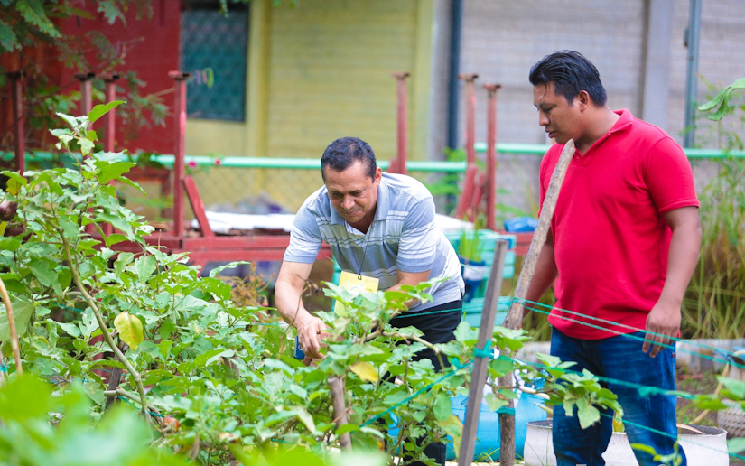
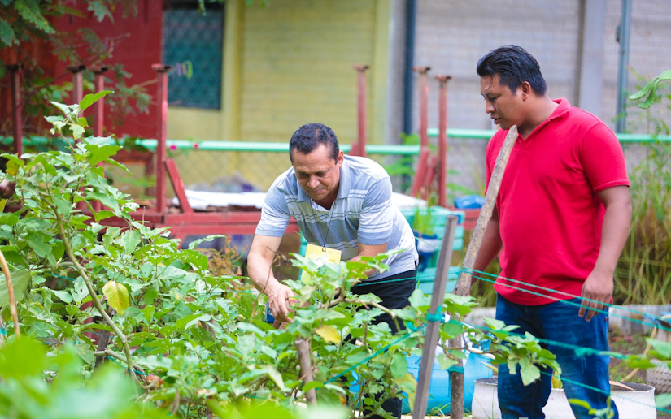

1956 Anastasio Somoza García, fue ultimado por el poeta nicaragüense Rigoberto López Pérez, después de lo cual sus hijos, Luis y Anastasio Somoza Debayle, le sucedieron en el poder, aún cuando periódicamente no figurasen como titulares formales de la presidencia.

Formar educandos logrando en ellos un desarrollo pleno en el que adquieran conocimientos, habilidades, valores y capacidades con la participación de directivos, docentes, personal de apoyo y padres de familia para que respondan de manera efectiva a las necesidades de la sociedad.
En nuestro colegio, buscamos ser un faro de excelencia educativa, donde cada estudiante descubra su máximo potencial y desarrolle un amor por el aprendizaje que los acompañará a lo largo de sus vidas.


Promover la excelencia educativa equivale a facilitar todos aquellos recursos necesarios, para cada uno de los alumnos, eliminando cualquier tipo de desigualdad que pueda llegar a darse, que les permitan tener los mejores resultados obteniendo el mayor alcance.

 


Pascual Rigoberto López Pérez (León, 13 de mayo de 1929 - 21 de septiembre de 1956), fue un poeta nicaragüense, importante símbolo de la revolución nicaragüense, que se inmoló al dar muerte al tirano Anastasio Somoza García. León, Nicaragua. El colegio del ilustre se encuentra ubicado de la calle ENEL Central 500 varas Al Sur
Roger Salgado (Director del colegio)
Lunes a Viernes 08 am - 04 pm
Sábados 08 am - 12 md